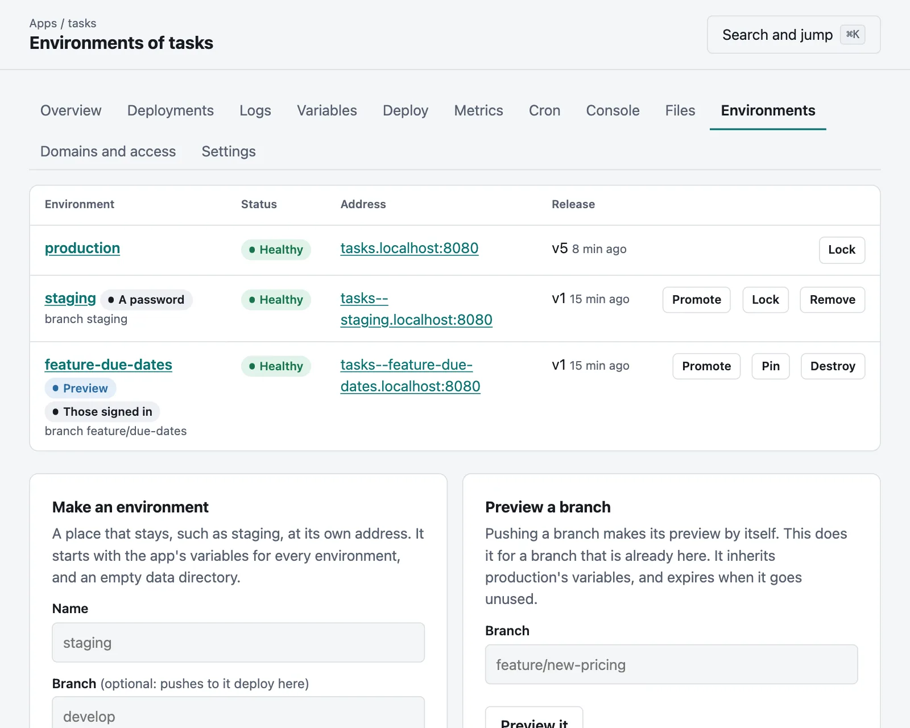
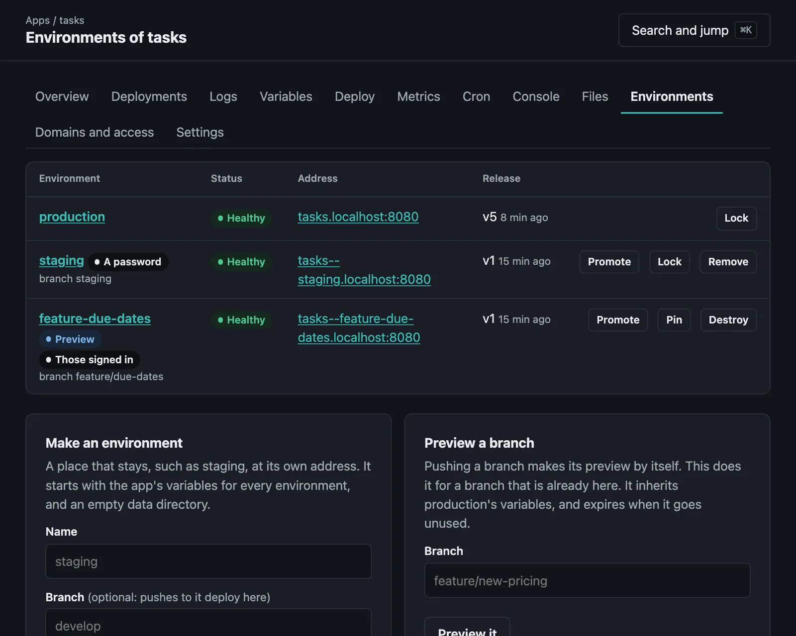

Previews and environments
A place of its own for every branch, staging, promoting, locks and sleeping.
On this page
An app can run in more than one place at once, each with its own address, variables, data and releases. Those places are its environments:
| What it is | Where it comes from | How long it stays | |
|---|---|---|---|
| Production | What the app is for | Every app has it | With the app |
A named environment, such as staging | A place that stays | [environments.staging], moor environments create, or moor deploy --env staging | Until it is removed |
| A preview | A branch, to look at and to show | Pushing a branch | Until its branch goes, or nothing uses it for seven days |
Production is at shop.apps.example.com, and the others at shop--staging.apps.example.com. The double dash keeps the name one label, so that the one wildcard DNS record and certificate the server already has cover every environment of every app. Anything but production answers with X-Robots-Tag: noindex, so that search engines leave it alone, and each can have a gate of its own.
Previews#
Push a branch:
git push moorage feature/new-pricingremote: moorage shop · feature-new-pricing · dep_01M6…
...
remote: ✔ live v1 at https://shop--feature-new-pricing.apps.example.comIt is built from that branch, and each further push releases to it. Deleting the branch destroys it:
git push moorage --delete feature/new-pricingIts name comes from the branch: lowercase, with anything else as a dash, at most 40 characters, with a short hash if it is cut or another branch has that name.
Its variables are production's, except those marked as production's alone, then [environments.preview] of its moorage.toml, then any set on the preview itself. Keep a secret from previews when you set it:
moor env set --secret --production-only STRIPE_KEYWho can reach it is, by default, those signed in with a role in the app's project, since it is work in progress with production's variables. Share links let in someone else, a maintainer can open one, and preview = "public" in server.toml opens them all.
Its data starts empty: $MOORAGE_DATA_DIR is its own, and on_create in [release] runs once, to seed it.
It runs what the branch says, with the number of instances production's manifest gives it, or [environments.preview] overrides.
It sleeps when nothing has asked it for anything for 30 minutes, and wakes for the next request.
It expires when nothing has deployed to it or asked it for anything for seven days, or what ttl says. Pin one to keep it. An app may have ten at a time; a push beyond that is kept and not deployed, and says so.
moor previews --app shopmoor previews pin feature-new-pricing --app shopmoor previews destroy feature-new-pricing --app shopA branch that was pushed while skipping the deploy can have a preview later:
moor previews create feature/new-pricing --app shopTo choose which branches get one, or none:
[previews]
branches = ["*", "!dependabot/*"]
ttl = "3d"[previews]
enabled = falseNamed environments#
Declare one, and pushes to its branch deploy to it. Deploying the manifest that declares it makes it, and a first push of its branch does too:


[environments.staging]
branch = "develop"
env = { LOG_LEVEL = "debug" }
processes.web.instances = 2Or make one yourself, and deploy to it however you deploy:
moor environments create staging --app shop --branch developmoor deploy --env staginggit push -o env=staging moorage my-branchUnlike most previews, a named environment inherits nothing of production's: it has the variables set for every environment (moor env set --all-envs), and its own. It has its own data directory, and it stays until it is removed, which takes a maintainer:
moor environments delete staging --app shopEvery command about one environment takes --env, and on an app's pages in the console the environment is chosen at the top.
Promoting#
What runs in staging can go to production as it is, without being built again, in seconds:
moor promote --from stagingmoor promote --from feature-new-pricing --to stagingThe build goes; the variables do not. It runs with those of the environment it goes to, and its own overrides in the manifest, and a release command runs as for any new build. If it was built with other build variables than that environment has, it says so: what it was built with stays in it, and moor redeploy builds it with these instead.
Locks#
A lock stops deployments to an environment, so that a rollback, say, is not overwritten by the next push while you look into what went wrong. Pushes are kept, and not deployed. Rollbacks, variables, restarts and scaling go on working.
moor lock --env productionmoor unlock --env productionThe page of a rollback offers the lock. Once it is unlocked, the next push deploys, or moor redeploy builds what was kept.
Sleeping#
An environment nobody is using need not use the machine. A preview goes to sleep after 30 minutes without a request, and any other environment does if you ask it to:
[previews]
sleep_after = "2h"
[environments.staging]
sleep_after = "30m"
[environments.preview]
sleep_after = "off"Asleep, its instances are stopped; its address, data, logs and releases stay. A request wakes it and waits for it, so that the one who asked notices no more than a slow answer:
- A browser waits up to two seconds, and then gets a short page that says it is waking up, and reloads itself until it is ready.
- Anything else waits up to 30 seconds, and then gets a
503withRetry-After.
It does not go to sleep with a request still going on, such as a stream or a WebSocket. A process that must keep running, such as a worker that takes jobs from elsewhere, can say so, and stays up while the others sleep. A static site has nothing to stop, and never sleeps.
[processes.worker]
command = "python worker.py"
sleep = falsePut one to sleep yourself, or wake one without waiting for a request. Deploying, restarting or scaling wakes it too:
moor sleep --env stagingmoor wake --env stagingWho may do what#
| Viewer | Deployer | Maintainer | |
|---|---|---|---|
| See environments and previews | ✓ | ✓ | ✓ |
| Make environments and previews, deploy, promote, lock, pin and put to sleep | ✓ | ✓ | |
| Destroy a preview | ✓ | ✓ | |
| Remove a named environment | ✓ |
Inside an app#
An instance can tell where it is:
| Variable | |
|---|---|
MOORAGE_ENV | production, staging or feature-new-pricing |
MOORAGE_ENV_KIND | production, named or preview |
MOORAGE_URL | Its own address |